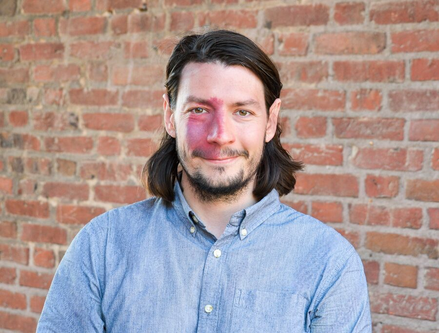

Researcher in Control of Dynamic Systems.
I make automatic control systems compatible with: cybersecurity adversarial learning environments privacy cybersecurity

I'm a Knut and Alice Wallenberg Postdoctoral Research Scholar at the Massachusetts Institute of Technology's Laboratory for Information and Decision Systems. My work models attackers from a defender's perspective, focusing on what they can learn from a system rather than assuming their goals in advance, and examines how feedback can be implemented, modified based on data, and exploited in adversarial, contested settings.
placeholder selection. Full list pending your confirmation against the official record.